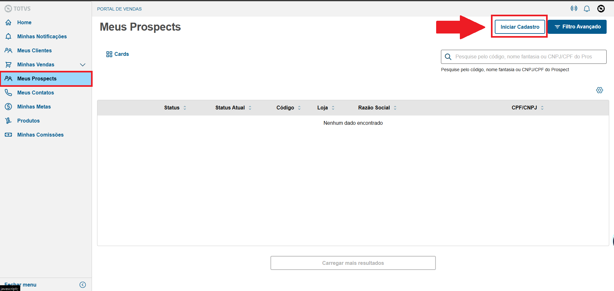
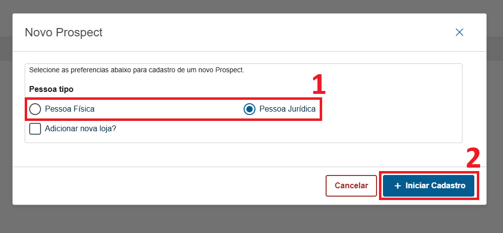
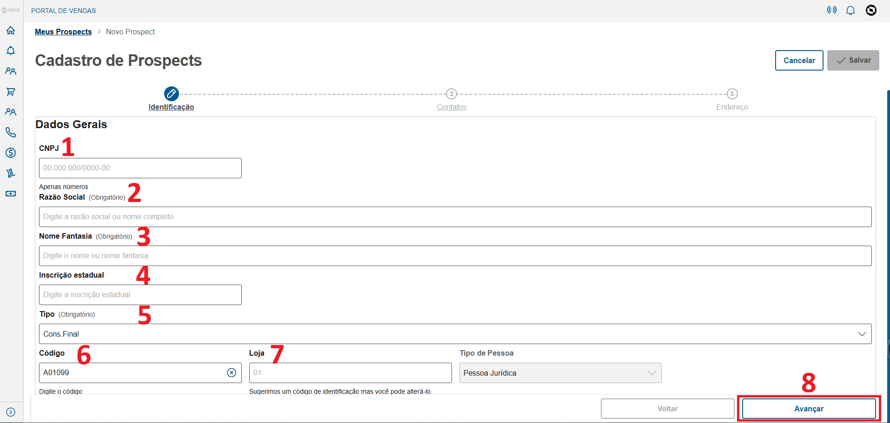
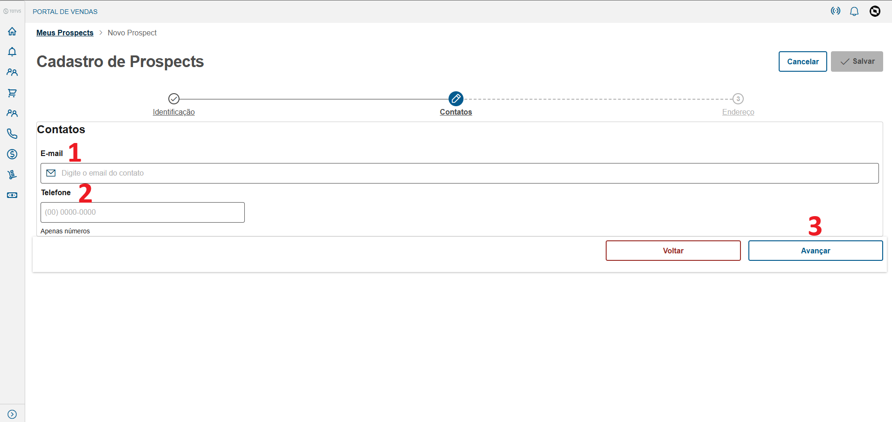
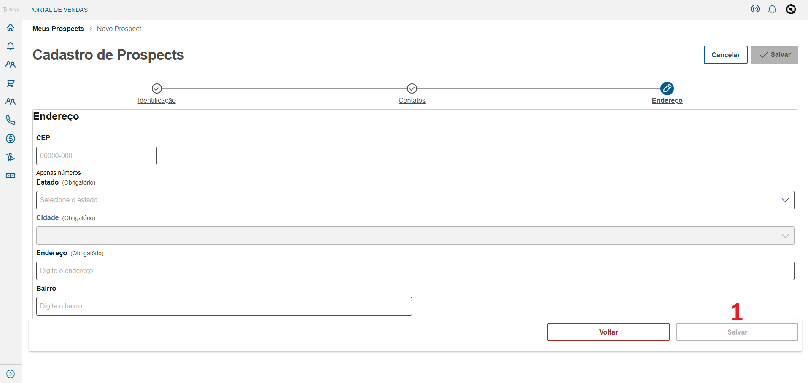
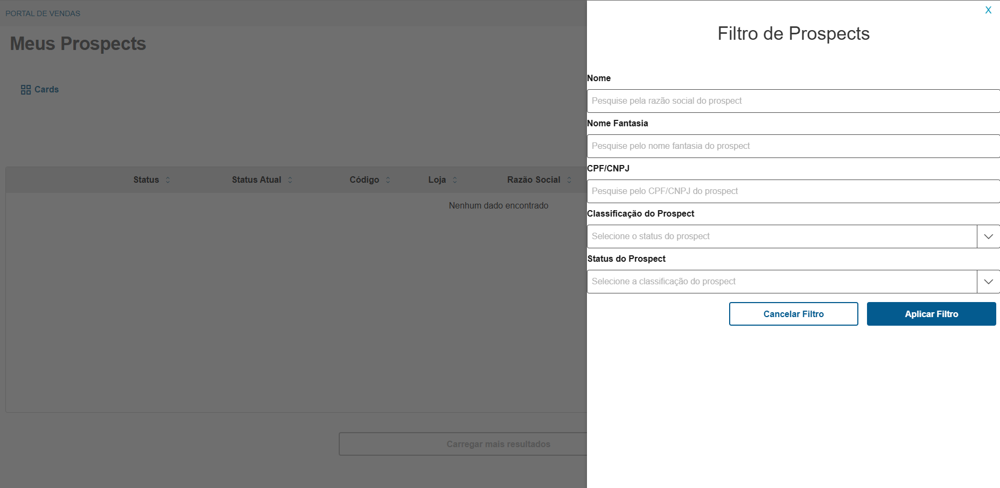

Esse menu serve para cadastro de novos clientes
Clique no botão "Iniciar cadastro" para cadastrar um novo prospect.
1-Selecione se o cliente é Pessoa Física ou Pessoa Jurídica
2- Iniciar Cadastro
Obs: O botão Adicionar nova loja? serve para cadastrar a filial dos clientes
1- Insira o CNPJ
2- Insira a Razão Social
3- Insira o Nome Fantasia
4- Insira a Inscrição Estadual, caso não tenha IE escreva ISENTO
5- Sempre deixe como Cons. Final
6- Insira o Código, Sempre os 6 primeiros digitos do CNPJ
7- Loja sempre 0001, a menos que seja uma filial, então subistitua por 0002
8- Avançar
Normalmente o E-mail e Telefone são preenchidos automaticamente, mas caso não, preencher manualmente
1- Insira o E-mail (Caso o email seja grande de mais deixar o campo vazio e solicitar ao vendas interno adicionar no cadastro)
2- Insira o Telefone
3- Avançar
Insira o CEP que as outras informações serão puxadas automaticamente
Clique em salvar e o cadastro vai estar criado
Clique no botão Filtro Avançado
Aqui voce pode filtrar por:
Nome
Nome Fantasia
CPF/CNPJ